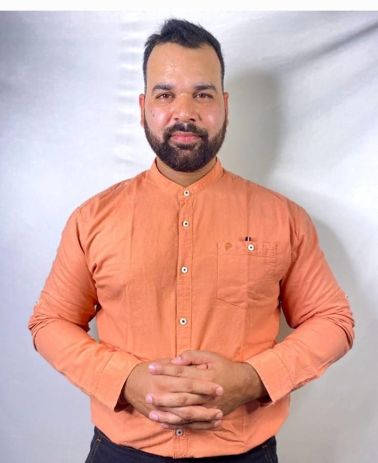

Untitled Hindi Feature
With filmmaker Anand Surapuri, on an upcoming Hindi feature film starring Nawazuddin Siddiqui.
Actor · Writer · Language & Dialect Coach
An Indian actor and Language & Dialect Coach working across television, feature films, regional cinema, theatre and advertising — bringing authentic voice and character to every role.

Projects featuring
About me
Arjun Singh Tanwar is an Indian actor, writer and Language & Dialect Coach with extensive experience across Indian television, feature films, regional cinema, theatre and advertising.
He has portrayed diverse characters in several popular television shows, with notable performances as Yakut Baig in Jodha Akbar and Brihaspati Dev in Mahabali Hanuman.
Deeply connected to Uttarakhand's culture, he played the lead in the regional film Viranu Haq, has performed in more than 200 stage shows across India and contributed to over 100 Uttarakhandi music albums.
As a Language & Dialect Coach he has worked on feature films and ad campaigns featuring Nawazuddin Siddiqui, Salman Khan and Mary Kom — combining acting, dialogue delivery and linguistic authenticity.
Selected work
as Yakut Baig
as Brihaspati Dev
as Kabir / Inspector Kabir
as Subh Yogi
Also appeared in ACP Arjun · Encounter · Yeh Hai Mohabbatein · Ek Aisa Ghar Banaunga · Meri Aashiqui Tumse Hi · Bhanwar · Bajrang Bali · Devon Ke Dev...Mahadev
Played the lead role in this regional feature film.
Starring Nawazuddin Siddiqui and Rajesh Kumar.
Film starring Nawazuddin Siddiqui.
Kampa Film, dir. Aditya Nimbalkar, starring Rajkummar Rao and Keerthy Suresh.
Language & Dialect Coach for the film starring Nawazuddin Siddiqui.
Language & Dialect Coach — starring Rajkummar Rao and Keerthy Suresh.
Language & Dialect Coach for Mary Kom.
Dialogue and language coaching.
Actor and Language & Dialect Coach.
Actor and Language & Dialect Coach for the campaign.
Language & Dialect Coach for Mary Kom.
Dialogue and language coaching.
Campaign featuring Navdeep, Gold Medalist.
Showreel & video portfolio
For casting directors, filmmakers and production houses.
Gallery
Regional entertainment
A strong association with Uttarakhand's regional entertainment industry and culture — on stage, on screen and in music.
Training
Under the guidance of Mr. Sumit Kumar, alumnus of the National School of Drama (NSD).
Acting diploma programme.
Skills
Upcoming projects
With filmmaker Anand Surapuri, on an upcoming Hindi feature film starring Nawazuddin Siddiqui.
An upcoming Uttarakhandi short film celebrating regional storytelling and cinema.
Contact
Available for films, television, OTT, advertisements, theatre and Language & Dialect Coaching assignments.
+91 97027 61013Based in Mumbai, Maharashtra · Hometown Dehradun, Uttarakhand